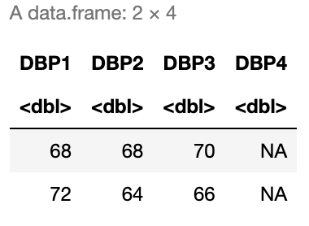
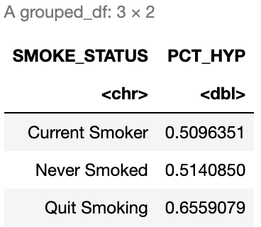

suppressPackageStartupMessages(library(HDSinRdata))
suppressPackageStartupMessages(library(tidyverse))
data(NHANESsample)5 Data Transformations and Summaries
In this chapter, we will introduce the dyplr package, which is part of the tidyverse group of packages, to expand our tools in exploring and transforming our data. We will learn how to do some basic manipulations of data (e.g. adding or removing columns, filtering data, arranging by one or multiple columns) as well as how to summarize data (e.g. grouping by values, calculating summary statistics). We will also practice combining these operations using the pipe operator %>%. We will use the same sample of the National Health and Nutrition Examination Survey (NHANES) as in Chapter 4.
5.1 Tibbles and Data Frames
Take a look at the class of NHANESsample. As we might expect, the data is stored as a data frame.
class(NHANESsample)
#> [1] "data.frame"However, the tidyverse also works with another data structure called a tibble. A tibble has all the properties of data frames that we have learned so far, but they are a more modern version of a data frame. To convert our data to this data structure we use the as_tibble() function. In practice, there are only very slight difference between the two data structures, and you generally do not need to convert data frames to tibbles. Below we convert our data from a data frame to a tibble and print the head of the data before converting it back to a data frame and repeating. You can see the two structures have a slightly different print statement but are otherwise very similar.
nhanes_df <- as_tibble(NHANESsample)
print(head(nhanes_df))
#> # A tibble: 6 × 21
#> ID AGE SEX RACE EDUCATION INCOME SMOKE YEAR LEAD BMI_CAT
#> <dbl> <dbl> <fct> <fct> <fct> <dbl> <fct> <dbl> <dbl> <fct>
#> 1 2 77 Male Non-Hisp… MoreThan… 5 Neve… 1999 5 BMI<=25
#> 2 5 49 Male Non-Hisp… MoreThan… 5 Quit… 1999 1.6 25<BMI…
#> 3 12 37 Male Non-Hisp… MoreThan… 4.93 Neve… 1999 2.4 BMI>=30
#> 4 13 70 Male Mexican … LessThan… 1.07 Quit… 1999 1.6 25<BMI…
#> 5 14 81 Male Non-Hisp… LessThan… 2.67 Stil… 1999 5.5 25<BMI…
#> # ℹ 1 more row
#> # ℹ 11 more variables: LEAD_QUANTILE <fct>, HYP <dbl>, ALC <chr>,
#> # DBP1 <dbl>, DBP2 <dbl>, DBP3 <dbl>, DBP4 <dbl>, SBP1 <dbl>,
#> # SBP2 <dbl>, SBP3 <dbl>, SBP4 <dbl>nhanes_df <- as.data.frame(nhanes_df)
print(head(nhanes_df))
#> ID AGE SEX RACE EDUCATION INCOME SMOKE YEAR
#> 1 2 77 Male Non-Hispanic White MoreThanHS 5.00 NeverSmoke 1999
#> 2 5 49 Male Non-Hispanic White MoreThanHS 5.00 QuitSmoke 1999
#> 3 12 37 Male Non-Hispanic White MoreThanHS 4.93 NeverSmoke 1999
#> 4 13 70 Male Mexican American LessThanHS 1.07 QuitSmoke 1999
#> 5 14 81 Male Non-Hispanic White LessThanHS 2.67 StillSmoke 1999
#> 6 15 38 Female Non-Hispanic White MoreThanHS 4.52 StillSmoke 1999
#> LEAD BMI_CAT LEAD_QUANTILE HYP ALC DBP1 DBP2 DBP3 DBP4 SBP1 SBP2
#> 1 5.0 BMI<=25 Q4 0 Yes 58 56 56 NA 106 98
#> 2 1.6 25<BMI<30 Q3 1 Yes 82 84 82 NA 122 122
#> 3 2.4 BMI>=30 Q4 1 Yes 108 98 100 NA 182 172
#> 4 1.6 25<BMI<30 Q3 1 Yes 78 62 70 NA 140 130
#> 5 5.5 25<BMI<30 Q4 1 Yes 56 NA 58 64 142 NA
#> 6 1.5 25<BMI<30 Q3 0 Yes 68 68 70 NA 106 112
#> SBP3 SBP4
#> 1 98 NA
#> 2 122 NA
#> 3 176 NA
#> 4 130 NA
#> 5 134 138
#> 6 106 NAWe mention tibbles here since some functions in the tidyverse package convert data frames to tibbles in their output. In particular, when we summarize over groups below we can expect a tibble to be returned. It is useful to be aware that our data may change data structure with such functions and to know that we can always convert back if needed.
5.2 Subsetting Data
In earlier chapters, we have seen how to select and filter data using row and column indices as well as using the subset() function. The dplyr package has its own functions that are useful to subset the data. The select() function allows us to select a subset of columns: this function takes in the data frame (or tibble) and the names or indices of the columns we want to select. For example, if we only wanted to select the variables for race and blood lead level, we could specify these two columns. To display the result of this selection, we use the pipe operator %>%. Recall that this takes the result on the left hand side and passes it as the first argument to the function on the right hand side. The output below shows that there are only two columns in the filtered data.
select(nhanes_df, c(RACE, LEAD)) %>% head()
#> RACE LEAD
#> 1 Non-Hispanic White 5.0
#> 2 Non-Hispanic White 1.6
#> 3 Non-Hispanic White 2.4
#> 4 Mexican American 1.6
#> 5 Non-Hispanic White 5.5
#> 6 Non-Hispanic White 1.5The select() function can also be used to remove columns by adding a negative sign in front of the vector of column names in its arguments. For example, below we keep all columns except ID and LEAD_QUANTILE. Note that in this case we have saved the selected data back to our data frame nhanes_df. Additionally, this time we used a pipe operator to pipe the data to the select function itself.
nhanes_df <- nhanes_df %>% select(-c(ID, LEAD_QUANTILE))
names(nhanes_df)
#> [1] "AGE" "SEX" "RACE" "EDUCATION" "INCOME"
#> [6] "SMOKE" "YEAR" "LEAD" "BMI_CAT" "HYP"
#> [11] "ALC" "DBP1" "DBP2" "DBP3" "DBP4"
#> [16] "SBP1" "SBP2" "SBP3" "SBP4"While select() allows us to choose a subset of columns, the filter() function allows us to choose a subset of rows. The filter() function takes a data frame as the first argument and a vector of booleans as the second argument. This vector of booleans can be generated using conditional statements as we used in Chapter 4. Below, we choose to filter the data to only observations after 2008.
nhanes_df_recent <- nhanes_df %>% filter(YEAR >= 2008)We can combine conditions by using multiple filter calls, by creating a more complicated conditional statement using the & (and), | (or), and %in% (in) operators, or by separating the conditions with commas within filter. Below, we demonstrate these three ways to filter the data to males between 2008 and 2012. Note that the between() function allows us to capture the logic YEAR >= 2008 & YEAR <= 2012.
# Example 1: multiple filter calls
nhanes_df_males1 <- nhanes_df %>%
filter(YEAR <= 2012) %>%
filter(YEAR >= 2008) %>%
filter(SEX == "Male")
# Example 2: combine with & operator
nhanes_df_males2 <- nhanes_df %>%
filter((YEAR <= 2012) & (YEAR >= 2008) & (SEX == "Male"))
# Example 3: combine into one filter call with commas
nhanes_df_males3 <- nhanes_df %>%
filter(between(YEAR, 2008, 2012), SEX == "Male")The use of parentheses in the code above is especially important in order to capture our desired logic. In all these examples, we broke our code up into multiple lines, which makes it easier to read. A good rule of thumb is to not go past 80 characters in a line, and R Studio conveniently has a vertical gray line at this limit. To create a new line, you can hit enter either after an operator (e.g. %>%, +, |) or within a set of unfinished brackets or parentheses. Either of these breaks lets R know that your code is not finished yet.
Lastly, we can subset the data using the slice() function to select a slice of rows by their index. The function takes in the data set and a vector of indices. Below, we find the first and last rows of the data.
slice(nhanes_df, c(1, nrow(nhanes_df)))
#> AGE SEX RACE EDUCATION INCOME SMOKE YEAR LEAD
#> 1 77 Male Non-Hispanic White MoreThanHS 5.00 NeverSmoke 1999 5.0
#> 2 38 Male Non-Hispanic White MoreThanHS 1.56 StillSmoke 2017 0.9
#> BMI_CAT HYP ALC DBP1 DBP2 DBP3 DBP4 SBP1 SBP2 SBP3 SBP4
#> 1 BMI<=25 0 Yes 58 56 56 NA 106 98 98 NA
#> 2 BMI>=30 1 Yes 98 92 98 NA 150 146 148 NAA few other useful slice functions are slice_sample(), slice_max(), and slice_min(). The first takes in an argument n which specifies the number of random rows to sample from the data. For example, we could randomly sample 100 rows from our data. The latter two allow us to specify a column through the argument order_by and return the n rows with either the highest or lowest values in that column. Below we find the three male observations from 2007 with the highest and lowest blood lead levels and select a subset of columns to display.
# three male observations with highest blood lead level in 2007
nhanes_df %>%
filter(YEAR == 2007, SEX == "Male") %>%
select(c(RACE, EDUCATION, SMOKE, LEAD, SBP1, DBP1)) %>%
slice_max(order_by = LEAD, n=3)
#> RACE EDUCATION SMOKE LEAD SBP1 DBP1
#> 1 Non-Hispanic Black LessThanHS NeverSmoke 33.1 106 66
#> 2 Other Hispanic LessThanHS StillSmoke 26.8 106 72
#> 3 Other Hispanic LessThanHS StillSmoke 25.7 112 60
# three male observations with lowest blood lead level in 2007
nhanes_df %>%
filter(YEAR == 2007, SEX == "Male") %>%
select(c(RACE, EDUCATION, SMOKE, LEAD, SBP1, DBP1)) %>%
slice_min(order_by = LEAD, n=3)
#> RACE EDUCATION SMOKE LEAD SBP1 DBP1
#> 1 Non-Hispanic White LessThanHS NeverSmoke 0.177 114 80
#> 2 Other Hispanic LessThanHS QuitSmoke 0.280 122 62
#> 3 Mexican American MoreThanHS QuitSmoke 0.320 112 665.2.1 Practice Question
Filter the data to only those with an education level of more than HS who report alcohol use. Then, select only the diastolic blood pressure variables and display the 4th and 10th rows. Your result should match the data below.

# Insert your solution here:5.3 Updating Rows and Columns
The next few functions we will look at will allow us to update the rows and columns in our data. For example, the rename() function allows us to change the names of columns. Below, we change the name of INCOME to PIR since this variable is the poverty income ratio and also update the name of SMOKE to be SMOKE_STATUS. When specifying these names, the new name is on the left of the = and the old name is on the right.
nhanes_df <- nhanes_df %>% rename(PIR = INCOME, SMOKE_STATUS = SMOKE)
names(nhanes_df)
#> [1] "AGE" "SEX" "RACE" "EDUCATION"
#> [5] "PIR" "SMOKE_STATUS" "YEAR" "LEAD"
#> [9] "BMI_CAT" "HYP" "ALC" "DBP1"
#> [13] "DBP2" "DBP3" "DBP4" "SBP1"
#> [17] "SBP2" "SBP3" "SBP4"In the last chapter, we created a new variable called EVER_SMOKE based on the smoking status variable using the ifelse() function. Recall that this function allows us to specify a condition and then two alternative values based on whether we meet or do not meet this condition. We see that there are about 15,000 subjects in our data who never smoked.
ifelse(nhanes_df$SMOKE_STATUS == "NeverSmoke", "No", "Yes") %>% table()
#> .
#> No Yes
#> 15087 16178Another useful function from the tidyverse is the case_when() function, which is an extension of the ifelse() function but allows to specify more than two cases. We demonstrate this function below to show how we could relabel the levels of the SMOKE_STATUS column. For each condition, we use the right side of the ~ to specify the value associated with a TRUE for that condition.
case_when(nhanes_df$SMOKE_STATUS == "NeverSmoke" ~ "Never Smoked",
nhanes_df$SMOKE_STATUS == "QuitSmoke" ~ "Quit Smoking",
nhanes_df$SMOKE_STATUS == "StillSmoke" ~ "Current Smoker") %>% table()
#> .
#> Current Smoker Never Smoked Quit Smoking
#> 7317 15087 8861Above, we did not store the columns we created. To do so, we could use the $ operator or the cbind() function. The tidyverse also includes an alternative function to add columns called mutate(). This function takes in a data frame and a set of columns with associated names to add to the data or update. In the example below, we create the column EVER_SMOKE and update the column SMOKE_STATUS. Within the mutate() function, we do not have to use the $ operator to reference the column SMOKE_STATUS. Instead, we can specify just the column name and it will interpret it as that column.
nhanes_df <- nhanes_df %>%
mutate(EVER_SMOKE = ifelse(SMOKE_STATUS == "NeverSmoke", "No", "Yes"),
SMOKE_STATUS = case_when(SMOKE_STATUS == "NeverSmoke" ~ "Never Smoked",
SMOKE_STATUS == "QuitSmoke" ~ "Quit Smoking",
SMOKE_STATUS == "StillSmoke" ~ "Current Smoker")) The last function we will demonstrate in this section is the arrange() function, which takes in a data frame and a vector of columns used to sort the data (data is sorted by the first column with ties being sorted by the second column, etc.). By default, the arrange() function sorts the data in increasing order, but we can use the desc() function to instead sort in descending order. For example, the code below filters the data to male smokers before sorting by decreasing systolic and diastolic blood pressure in descending order.
nhanes_df %>%
select(c(YEAR, SEX, SMOKE_STATUS, SBP1, DBP1, LEAD)) %>%
filter(SEX == "Male", SMOKE_STATUS == "Current Smoker") %>%
arrange(desc(SBP1), desc(DBP1)) %>%
head(10)
#> YEAR SEX SMOKE_STATUS SBP1 DBP1 LEAD
#> 1 2011 Male Current Smoker 230 120 5.84
#> 2 2015 Male Current Smoker 230 98 1.56
#> 3 2009 Male Current Smoker 220 80 4.84
#> 4 2001 Male Current Smoker 218 118 3.70
#> 5 2017 Male Current Smoker 212 122 2.20
#> 6 2003 Male Current Smoker 212 54 4.00
#> 7 2011 Male Current Smoker 210 92 5.37
#> 8 2007 Male Current Smoker 210 80 2.18
#> 9 2015 Male Current Smoker 206 108 1.44
#> 10 2003 Male Current Smoker 206 68 1.805.3.1 Practice Question
Create a new column called DBP_CHANGE that is equal to the difference between a patient’s first and fourth diastolic blood pressure readings. Then, sort the data frame by this new column in increasing order and print the first four rows. The first four DBP_CHANGE values in the head of the resulting dataset should be -66, -64, -64, and -62.
# Insert your solution here: 5.4 Summarizing and Grouping
If we wanted to understand how many observations there are for each given race category, we could use the table() function as we described in earlier chapters. Another similar function is the count() function. This function takes in a data frame and one or more columns and counts the number of rows for each combination of unique values in these columns. If no columns are specified, it counts the total number of rows in the data frame. Below, we find the total number of rows (31,265) and the number of observations by race and year. We can see that the number in each group fluctuates quite a bit!
count(nhanes_df)
#> n
#> 1 31265
count(nhanes_df, RACE, YEAR)
#> RACE YEAR n
#> 1 Mexican American 1999 713
#> 2 Mexican American 2001 674
#> 3 Mexican American 2003 627
#> 4 Mexican American 2005 634
#> 5 Mexican American 2007 639
#> 6 Mexican American 2009 672
#> 7 Mexican American 2011 322
#> 8 Mexican American 2013 234
#> 9 Mexican American 2015 287
#> 10 Mexican American 2017 475
#> 11 Other Hispanic 1999 181
#> 12 Other Hispanic 2001 129
#> 13 Other Hispanic 2003 80
#> 14 Other Hispanic 2005 96
#> 15 Other Hispanic 2007 395
#> 16 Other Hispanic 2009 367
#> 17 Other Hispanic 2011 337
#> 18 Other Hispanic 2013 167
#> 19 Other Hispanic 2015 214
#> 20 Other Hispanic 2017 313
#> 21 Non-Hispanic White 1999 1401
#> 22 Non-Hispanic White 2001 1882
#> 23 Non-Hispanic White 2003 1785
#> 24 Non-Hispanic White 2005 1818
#> 25 Non-Hispanic White 2007 1940
#> 26 Non-Hispanic White 2009 2169
#> 27 Non-Hispanic White 2011 1463
#> 28 Non-Hispanic White 2013 917
#> 29 Non-Hispanic White 2015 685
#> 30 Non-Hispanic White 2017 1413
#> 31 Non-Hispanic Black 1999 463
#> 32 Non-Hispanic Black 2001 542
#> 33 Non-Hispanic Black 2003 576
#> 34 Non-Hispanic Black 2005 679
#> 35 Non-Hispanic Black 2007 728
#> 36 Non-Hispanic Black 2009 661
#> 37 Non-Hispanic Black 2011 876
#> 38 Non-Hispanic Black 2013 357
#> 39 Non-Hispanic Black 2015 351
#> 40 Non-Hispanic Black 2017 808
#> 41 Other Race 1999 76
#> 42 Other Race 2001 88
#> 43 Other Race 2003 109
#> 44 Other Race 2005 122
#> 45 Other Race 2007 123
#> 46 Other Race 2009 175
#> 47 Other Race 2011 475
#> 48 Other Race 2013 223
#> 49 Other Race 2015 209
#> 50 Other Race 2017 595Finding the counts like we did above is a form of a summary statistic for our data. The summarize() function in the tidyverse is used to compute summary statistics of the data and allows us to compute multiple statistics: this function takes in a data frame and one or more summary functions based on the given column names. In the example below, we find the total number of observations as well as the mean and median systolic blood pressure for Non-Hispanic Blacks. Note that the n() function is the function within summarize() that finds the number of observations. In the mean() and median() functions we set na.rm=TRUE to remove NAs before computing these values (otherwise we could get NA as our output).
nhanes_df %>%
filter(RACE == "Non-Hispanic Black") %>%
summarize(TOT = n(), MEAN_SBP = mean(SBP1, na.rm=TRUE),
MEAN_DBP = mean(DBP1, na.rm=TRUE))
#> TOT MEAN_SBP MEAN_DBP
#> 1 6041 129 72.6If we wanted to repeat this for the other race groups, we would have to change the arguments to the filter() function each time. To avoid having to repeat our code and/or do this multiple times, we can use the group_by() function, which takes a data frame and one or more columns with which to group the data by. Below, we group using the RACE variable. When we look at printed output it looks almost the same as it did before except we can see that its class is now a grouped data frame, which is printed at the top. In fact, a grouped data frame (or grouped tibble) acts like a set of data frames: one for each group. If we use the slice() function with index 1, it will return the first row for each group.
nhanes_df %>%
group_by(RACE) %>%
slice(1)
#> # A tibble: 5 × 20
#> # Groups: RACE [5]
#> AGE SEX RACE EDUCATION PIR SMOKE_STATUS YEAR LEAD BMI_CAT
#> <dbl> <fct> <fct> <fct> <dbl> <chr> <dbl> <dbl> <fct>
#> 1 70 Male Mexican… LessThan… 1.07 Quit Smoking 1999 1.6 25<BMI…
#> 2 61 Female Other H… MoreThan… 3.33 Current Smo… 1999 2.2 BMI<=25
#> 3 77 Male Non-His… MoreThan… 5 Never Smoked 1999 5 BMI<=25
#> 4 38 Female Non-His… HS 0.92 Current Smo… 1999 1.8 25<BMI…
#> 5 63 Female Other R… MoreThan… 5 Never Smoked 1999 1.2 BMI<=25
#> # ℹ 11 more variables: HYP <dbl>, ALC <chr>, DBP1 <dbl>, DBP2 <dbl>,
#> # DBP3 <dbl>, DBP4 <dbl>, SBP1 <dbl>, SBP2 <dbl>, SBP3 <dbl>,
#> # SBP4 <dbl>, EVER_SMOKE <chr>Grouping data is very helpful in combination with the summarize() function. Like with the slice() function, summarize() will calculate the summary values for each group. We can now find the total number of observations as well as the mean systolic and diastolic blood pressure values for each racial group. Note that the returned summarized data is in a tibble.
nhanes_df %>%
group_by(RACE) %>%
summarize(TOT = n(), MEAN_SBP = mean(SBP1, na.rm=TRUE),
MEAN_DBP = mean(DBP1, na.rm=TRUE))
#> # A tibble: 5 × 4
#> RACE TOT MEAN_SBP MEAN_DBP
#> <fct> <int> <dbl> <dbl>
#> 1 Mexican American 5277 124. 70.4
#> 2 Other Hispanic 2279 123. 70.1
#> 3 Non-Hispanic White 15473 125. 70.4
#> 4 Non-Hispanic Black 6041 129. 72.6
#> 5 Other Race 2195 122. 72.6After summarizing, the data is no longer grouped by race. If we ever want to remove the group structure from our data, we can use the ungroup() function, which restores the data to a single data frame. After ungrouping by race below, we can see that we get a single observation returned by the slice() function.
nhanes_df %>%
select(SEX, RACE, SBP1, DBP1) %>%
group_by(RACE) %>%
ungroup() %>%
arrange(desc(SBP1)) %>%
slice(1)
#> # A tibble: 1 × 4
#> SEX RACE SBP1 DBP1
#> <fct> <fct> <dbl> <dbl>
#> 1 Female Non-Hispanic White 270 1245.4.1 Practice Question
Create a data frame summarizing the percent of patients with hypertension by smoking status. The result should look like this:

# Insert your solution here:5.5 Recap Video
5.6 Exercises
The following exercises use the covidcases dataset from the HDSinRdata package. Before completing the exercises, be sure to read the documentation for this data (?covidcases).
data(covidcases)Suppose we are interested in the distribution of weekly cases by state. First, create a new column in
covidcasescalledregionspecifying whether each state is in the Northeast, Midwest, South, or West (you can either do this by hand using this list of which states are in which region or you can use state.region from thedatasetspackage in R). Then, create a data frame summarizing the average and standard deviation of the weekly cases for the Northeast.Now, create a data frame with the average and standard deviation summarized for each region rather than for just one selected region as in Question 1. Sort this data frame from highest to lowest average weekly cases. What other information would you need in order to more accurately compare these regions in terms of their average cases?
Find the ten counties in the Midwest with the lowest weekly deaths in week 15 of this data ignoring ties (use
?slice_minto find the argument needed for this). What do you notice about the minimum values? See the data documentation for why we observe these values.Filter the data to between weeks 9 and 20 (around the start of the pandemic), get the total cases per county during that time frame, and then find the county in each state that had the highest number of total cases.